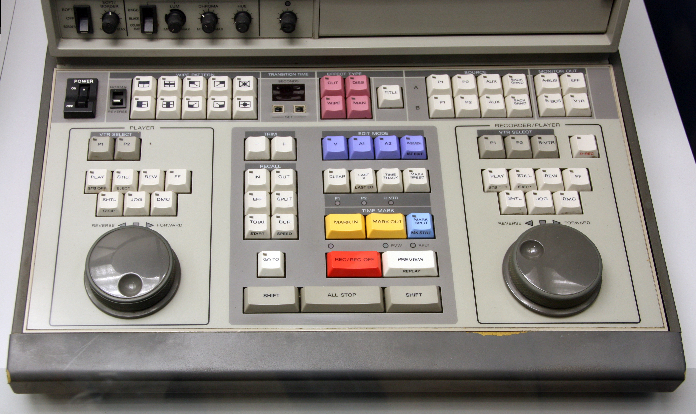
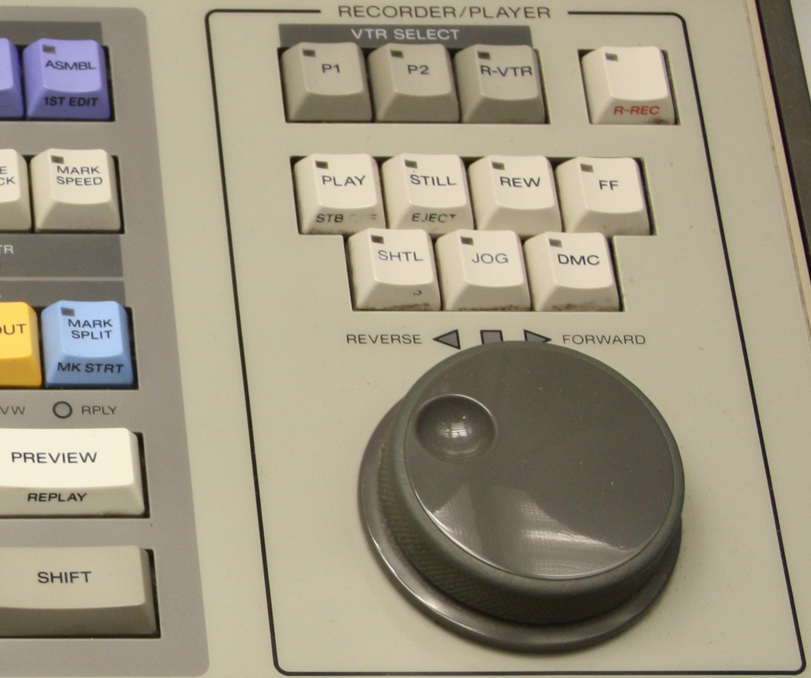

Sony BVE-600 (c. 1985)
A desktop edit controller with two independent jog dials — one hand on the source deck, one on the recorder — for two-handed scrubbing

Overview
The Sony BVE-600 is a desktop video editing controller for the U-Matic format, made by Sony's professional video division in the mid-1980s. It sits between consumer edit controllers and full broadcast edit consoles, giving a dedicated physical control surface for cutting tape-to-tape.
Its defining feature is two independent jog dials — one dedicated to the source (player) VCR, one to the recorder VCR — plus a row of transition and effects controls and tape transport buttons. Jog dials use a rotary incremental encoder to scrub frame-by-frame at slow speed, with a spring-loaded shuttle ring for faster speeds. The editor scrubs the source and record decks simultaneously with both hands, each hand mirroring the deck it controls — a literal bimanual mapping of the two-deck editing operation.
Deep dive
Where the broadcast CMX puts a single jog box on a function keyboard, the BVE-600 gives the desktop editor two independent jog dials — one per deck. To assemble an edit you scrub the source with one hand to find the in point and scrub the recorder with the other to find the out point, working both simultaneously. The hardware surface is a literal bimanual mapping of the two-deck editing task.
Each jog dial is a rotary incremental encoder: spin it forward or back to step frame-by-frame through the footage, and the faster it turns the faster it shuttles. Released, the dial stops and the deck holds or plays. It is the same embodied 'roll the time under your thumb' mechanic that later became the scroll wheel and the DJ jog wheel.
The BVE-600 makes editing a hands-on, eyes-off-the-machine ritual: your fingers roll the dials to feel their way through the footage while your eyes watch the two monitor images. A physical control surface for time itself.
Team & pioneers
- Sony Corporation professional video division; manufactured the BVE-600
Media
